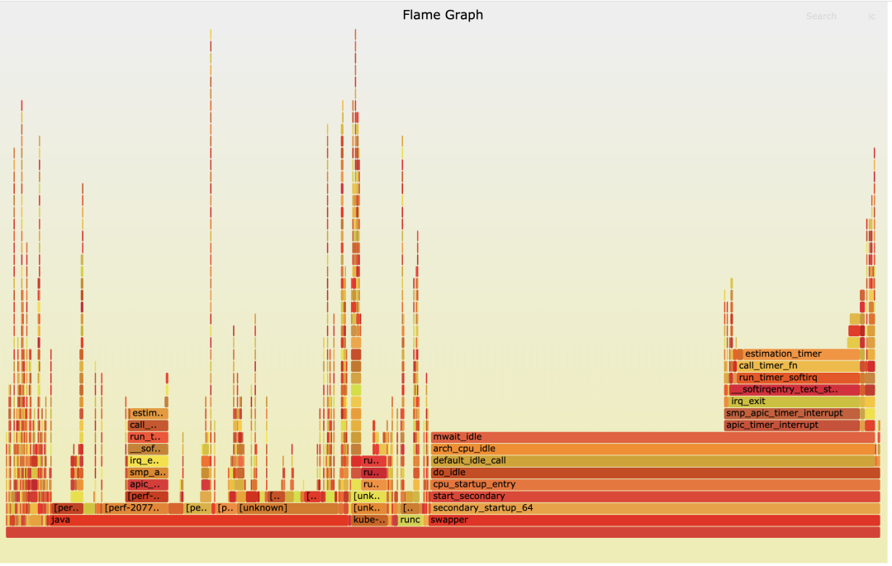

- 00 开篇词 一个态度两个步骤，成为容器实战高手.md.html
- 01 认识容器：容器的基本操作和实现原理.md.html
- 02 理解进程（1）：为什么我在容器中不能kill 1号进程？.md.html
- 03 理解进程（2）：为什么我的容器里有这么多僵尸进程？.md.html
- 04 理解进程（3）：为什么我在容器中的进程被强制杀死了？.md.html
- 05 容器CPU（1）：怎么限制容器的CPU使用？.md.html
- 06 容器CPU（2）：如何正确地拿到容器CPU的开销？.md.html
- 07 Load Average：加了CPU Cgroup限制，为什么我的容器还是很慢？.md.html
- 08 容器内存：我的容器为什么被杀了？.md.html
- 09 Page Cache：为什么我的容器内存使用量总是在临界点.md.html
- 10 Swap：容器可以使用Swap空间吗？.md.html
- 11 容器文件系统：我在容器中读写文件怎么变慢了.md.html
- 12 容器文件Quota：容器为什么把宿主机的磁盘写满了？.md.html
- 13 容器磁盘限速：我的容器里磁盘读写为什么不稳定.md.html
- 14 容器中的内存与IO：容器写文件的延时为什么波动很大？.md.html
- 15 容器网络：我修改了procsysnet下的参数，为什么在容器中不起效？.md.html
- 16 容器网络配置（1）：容器网络不通了要怎么调试.md.html
- 17 容器网络配置（2）：容器网络延时要比宿主机上的高吗.md.html
- 18 容器网络配置（3）：容器中的网络乱序包怎么这么高？.md.html
- 19 容器安全（1）：我的容器真的需要privileged权限吗.md.html
- 20 容器安全（2）：在容器中，我不以root用户来运行程序可以吗？.md.html
- 加餐01 案例分析：怎么解决海量IPVS规则带来的网络延时抖动问题？.md.html
- 加餐02 理解perf：怎么用perf聚焦热点函数？.md.html
- 加餐03 理解ftrace（1）：怎么应用ftrace查看长延时内核函数？.md.html
- 加餐04 理解ftrace（2）：怎么理解ftrace背后的技术tracepoint和kprobe？.md.html
- 加餐05 eBPF：怎么更加深入地查看内核中的函数？.md.html
- 加餐06 BCC：入门eBPF的前端工具.md.html
- 加餐福利 课后思考题答案合集.md.html
- 结束语 跳出舒适区，突破思考的惰性.md.html
加餐02 理解perf：怎么用perf聚焦热点函数？
你好，我是程远。今天我要和你聊一聊容器中如何使用 perf。
上一讲中，我们分析了一个生产环境里的一个真实例子，由于节点中的大量的 IPVS 规则导致了容器在往外发送网络包的时候，时不时会有很高的延时。在调试分析这个网络延时问题的过程中，我们会使用多种 Linux 内核的调试工具，利用这些工具，我们就能很清晰地找到这个问题的根本原因。
在后面的课程里，我们会挨个来讲解这些工具，其中 perf 工具的使用相对来说要简单些，所以这一讲我们先来看 perf 这个工具。
问题回顾
在具体介绍 perf 之前，我们先来回顾一下，上一讲中，我们是在什么情况下开始使用 perf 工具的，使用了 perf 工具之后给我们带来了哪些信息。
在调试网路延时的时候，我们使用了 ebpf 的工具之后，发现了节点上一个 CPU，也就是 CPU32 的 Softirq CPU Usage（在运行 top 时，%Cpu 那行中的 si 数值就是 Softirq CPU Usage）时不时地会增高一下。
在发现 CPU Usage 异常增高的时候，我们肯定想知道是什么程序引起了 CPU Usage 的异常增高，这时候我们就可以用到 perf 了。
具体怎么操作呢？我们可以通过抓取数据、数据读取和异常聚焦三个步骤来实现。
第一步，抓取数据。当时我们运行了下面这条 perf 命令，这里的参数 -C 32 是指定只抓取 CPU32 的执行指令；-g 是指 call-graph enable，也就是记录函数调用关系； sleep 10 主要是为了让 perf 抓取 10 秒钟的数据。
# perf record -C 32 -g -- sleep 10
执行完 perf record 之后，我们可以用 perf report 命令进行第二步，也就是读取数据。为了更加直观地看到 CPU32 上的函数调用情况，我给你生成了一个火焰图（火焰图的生产方法，我们在后面介绍）。
通过这个火焰图，我们发现了在 Softirq 里 TIMER softirq （run_timer_softirq）的占比很高，并且 timer 主要处理的都是 estimation_timer() 这个函数，也就是看火焰图 X 轴占比比较大的函数。这就是第三步异常聚焦，也就是说我们通过 perf 在 CPU Usage 异常的 CPU32 上，找到了具体是哪一个内核函数使用占比较高。这样在后面的调试分析中，我们就可以聚焦到这个内核函数 estimation_timer() 上了。

好了，通过回顾我们在网络延时例子中是如何使用 perf 的，我们知道了这一点，perf 可以在 CPU Usage 增高的节点上找到具体的引起 CPU 增高的函数，然后我们就可以有针对性地聚焦到那个函数做分析。
既然 perf 工具这么有用，想要更好地使用这个工具，我们就要好好认识一下它，那我们就一起看看 perf 的基本概念和常用的使用方法。
如何理解 Perf 的概念和工作机制？
Perf 这个工具最早是 Linux 内核著名开发者 Ingo Molnar 开发的，它的源代码在内核源码tools 目录下，在每个 Linux 发行版里都有这个工具，比如 CentOS 里我们可以运行 yum install perf 来安装，在 Ubuntu 里我们可以运行 apt install linux-tools-common 来安装。
Event
第一次上手使用 perf 的时候，我们可以先运行一下 perf list 这个命令，然后就会看到 perf 列出了大量的 event，比如下面这个例子就列出了常用的 event。
# perf list
…
branch-instructions OR branches [Hardware event]
branch-misses [Hardware event]
bus-cycles [Hardware event]
cache-misses [Hardware event]
cache-references [Hardware event]
cpu-cycles OR cycles [Hardware event]
instructions [Hardware event]
ref-cycles [Hardware event]
alignment-faults [Software event]
bpf-output [Software event]
context-switches OR cs [Software event]
cpu-clock [Software event]
cpu-migrations OR migrations [Software event]
dummy [Software event]
emulation-faults [Software event]
major-faults [Software event]
minor-faults [Software event]
page-faults OR faults [Software event]
task-clock [Software event]
…
block:block_bio_bounce [Tracepoint event]
block:block_bio_complete [Tracepoint event]
block:block_bio_frontmerge [Tracepoint event]
block:block_bio_queue [Tracepoint event]
block:block_bio_remap [Tracepoint event]
从这里我们可以了解到 event 都有哪些类型， perf list 列出的每个 event 后面都有一个"[]"，里面写了这个 event 属于什么类型，比如"Hardware event"、"Software event"等。完整的 event 类型，我们在内核代码枚举结构 perf_type_id 里可以看到。
接下来我们就说三个主要的 event，它们分别是 Hardware event、Software event 还有 Tracepoints event。
Hardware event
Hardware event 来自处理器中的一个 PMU（Performance Monitoring Unit），这些 event 数目不多，都是底层处理器相关的行为，perf 中会命名几个通用的事件，比如 cpu-cycles，执行完成的 instructions，Cache 相关的 cache-misses。
不同的处理器有自己不同的 PMU 事件，对于 Intel x86 处理器，PMU 的使用和编程都可以在“Intel 64 and IA-32 Architectures Developer's Manual: Vol. 3B”（Intel 架构的开发者手册）里查到。
我们运行一下 perf stat ，就可以看到在这段时间里这些 Hardware event 发生的数目。
# perf stat
^C
Performance counter stats for 'system wide':
58667.77 msec cpu-clock # 63.203 CPUs utilized
258666 context-switches # 0.004 M/sec
2554 cpu-migrations # 0.044 K/sec
30763 page-faults # 0.524 K/sec
21275365299 cycles # 0.363 GHz
24827718023 instructions # 1.17 insn per cycle
5402114113 branches # 92.080 M/sec
59862316 branch-misses # 1.11% of all branches
0.928237838 seconds time elapsed
Software event
Software event 是定义在 Linux 内核代码中的几个特定的事件，比较典型的有进程上下文切换（内核态到用户态的转换）事件 context-switches、发生缺页中断的事件 page-faults 等。
为了让你更容易理解，这里我举个例子。就拿 page-faults 这个 perf 事件来说，我们可以看到，在内核代码处理缺页中断的函数里，就是调用了 perf_sw_event() 来注册了这个 page-faults。
/*
\* Explicitly marked noinline such that the function tracer sees this as the
\* page_fault entry point. __do_page_fault 是Linux内核处理缺页中断的主要函数
*/
static noinline void
__do_page_fault(struct pt_regs *regs, unsigned long hw_error_code,
unsigned long address)
{
prefetchw(¤t->mm->mmap_sem);
if (unlikely(kmmio_fault(regs, address)))
return;
/* Was the fault on kernel-controlled part of the address space? */
if (unlikely(fault_in_kernel_space(address)))
do_kern_addr_fault(regs, hw_error_code, address);
else
do_user_addr_fault(regs, hw_error_code, address);
/* 在do_user_addr_fault()里面调用了perf_sw_event() */
}
/* Handle faults in the user portion of the address space */
static inline
void do_user_addr_fault(struct pt_regs *regs,
unsigned long hw_error_code,
unsigned long address)
{
…
perf_sw_event(PERF_COUNT_SW_PAGE_FAULTS, 1, regs, address);
…
}
Tracepoints event
你可以在 perf list 中看到大量的 Tracepoints event，这是因为内核中很多关键函数里都有 Tracepoints。它的实现方式和 Software event 类似，都是在内核函数中注册了 event。
不过，这些 tracepoints 不仅是用在 perf 中，它已经是 Linux 内核 tracing 的标准接口了，ftrace，ebpf 等工具都会用到它，后面我们还会再详细介绍 tracepoint。
好了，讲到这里，你要重点掌握的内容是，event 是 perf 工作的基础，主要有两种：有使用硬件的 PMU 里的 event，也有在内核代码中注册的 event。
那么在这些 event 都准备好了之后，perf 又是怎么去使用这些 event 呢？前面我也提到过，有计数和采样两种方式，下面我们分别来看看。
计数（count）
计数的这种工作方式比较好理解，就是统计某个 event 在一段时间里发生了多少次。
那具体我们怎么进行计数的呢？perf stat 这个命令就是来查看 event 的数目的，前面我们已经运行过 perf stat 来查看所有的 Hardware events。
这里我们可以加上"-e"参数，指定某一个 event 来看它的计数，比如 page-faults，这里我们看到在当前 CPU 上，这个 event 在 1 秒钟内发生了 49 次：
# perf stat -e page-faults -- sleep 1
Performance counter stats for 'sleep 1':
49 page-faults
1.001583032 seconds time elapsed
0.001556000 seconds user
0.000000000 seconds sys
采样（sample）
说完了计数，我们再来看看采样。在开头回顾网路延时问题的时候，我提到通过 perf record -C 32 -g -- sleep 10 这个命令，来找到 CPU32 上 CPU 开销最大的 Softirq 相关函数。这里使用的 perf record 命令就是通过采样来得到热点函数的，我们来分析一下它是怎么做的。
perf record 在不加 -e 指定 event 的时候，它缺省的 event 就是 Hardware event cycles。我们先用 perf stat来查看 1 秒钟 cycles 事件的数量，在下面的例子里这个数量是 1878165 次。
我们可以想一下，如果每次 cycles event 发生的时候，我们都记录当时的 IP（就是处理器当时要执行的指令地址）、IP 所属的进程等信息的话，这样系统的开销就太大了。所以 perf 就使用了对 event 采样的方式来记录 IP、进程等信息。
# perf stat -e cycles -- sleep 1
Performance counter stats for 'sleep 1':
1878165 cycles
Perf 对 event 的采样有两种模式：
第一种是按照 event 的数目（period），比如每发生 10000 次 cycles event 就记录一次 IP、进程等信息， perf record 中的 -c 参数可以指定每发生多少次，就做一次记录。
比如在下面的例子里，我们指定了每 10000 cycles event 做一次采样之后，在 1 秒里总共就做了 191 次采样，比我们之前看到 1 秒钟 1878165 次 cycles 的次数要少多了。
# perf record -e cycles -c 10000 -- sleep 1
[ perf record: Woken up 1 times to write data ]
[ perf record: Captured and wrote 0.024 MB perf.data (191 samples) ]
第二种是定义一个频率（frequency）， perf record 中的 -F 参数就是指定频率的，比如 perf record -e cycles -F 99 -- sleep 1 ，就是指采样每秒钟做 99 次。
在 perf record 运行结束后，会在磁盘的当前目录留下 perf.data 这个文件，里面记录了所有采样得到的信息。然后我们再运行 perf report 命令，查看函数或者指令在这些采样里的分布比例，后面我们会用一个例子说明。
好，说到这里，我们已经把 perf 的基本概念和使用机制都讲完了。接下来，我们看看在容器中怎么使用 perf？
容器中怎样使用 perf？
如果你的 container image 是基于 Ubuntu 或者 CentOS 等 Linux 发行版的，你可以尝试用它们的 package repo 安装 perf 的包。不过，这么做可能会有个问题，我们在前面介绍 perf 的时候提过，perf 是和 Linux kernel 一起发布的，也就是说 perf 版本最好是和 Linux kernel 使用相同的版本。
如果容器中 perf 包是独立安装的，那么容器中安装的 perf 版本可能会和宿主机上的内核版本不一致，这样有可能导致 perf 无法正常工作。
所以，我们在容器中需要跑 perf 的时候，最好从相应的 Linux kernel 版本的源代码里去编译，并且采用静态库（-static）的链接方式。然后，我们把编译出来的 perf 直接 copy 到容器中就可以使用了。
如何在 Linux kernel 源代码里编译静态链接的 perf，你可以参考后面的代码：
# cd $(KERNEL_SRC_ROOT)/tools/perf
# vi Makefile.perf
#### ADD “LDFLAGS=-static” in Makefile.perf
# make clean; make
# file perf
perf: ELF 64-bit LSB executable, x86-64, version 1 (GNU/Linux), statically linked, for GNU/Linux 3.2.0, BuildID[sha1]=9a42089e52026193fabf693da3c0adb643c2313e, with debug_info, not stripped, too many notes (256)
# ls -lh perf
-rwxr-xr-x 1 root root 19M Aug 14 07:08 perf
我这里给了一个带静态链接 perf（kernel 5.4）的 container image例子，你可以运行 make image 来生成这个 image。
在容器中运行 perf，还要注意一个权限的问题，有两点注意事项需要你留意。
第一点，Perf 通过系统调用 perf_event_open() 来完成对 perf event 的计数或者采样。不过 Docker 使用 seccomp（seccomp 是一种技术，它通过控制系统调用的方式来保障 Linux 安全）会默认禁止 perf_event_open()。
所以想要让 Docker 启动的容器可以运行 perf，我们要怎么处理呢？
其实这个也不难，在用 Docker 启动容器的时候，我们需要在 seccomp 的 profile 里，允许 perf_event_open() 这个系统调用在容器中使用。在我们的例子中，启动 container 的命令里，已经加了这个参数允许了，参数是"--security-opt seccomp=unconfined"。
第二点，需要允许容器在没有 SYS_ADMIN 这个 capability（Linux capability 我们在第 19 讲说过）的情况下，也可以让 perf 访问这些 event。那么现在我们需要做的就是，在宿主机上设置出 echo -1 > /proc/sys/kernel/perf_event_paranoid，这样普通的容器里也能执行 perf 了。
完成了权限设置之后，在容器中运行 perf，就和在 VM/BM 上运行没有什么区别了。
最后，我们再来说一下我们在定位 CPU Uage 异常时最常用的方法，常规的步骤一般是这样的：
首先，调用 perf record 采样几秒钟，一般需要加 -g 参数，也就是 call-graph，还需要抓取函数的调用关系。在多核的机器上，还要记得加上 -a 参数，保证获取所有 CPU Core 上的函数运行情况。至于采样数据的多少，在讲解 perf 概念的时候说过，我们可以用 -c 或者 -F 参数来控制。
接着，我们需要运行 perf report 读取数据。不过很多时候，为了更加直观地看到各个函数的占比，我们会用 perf script 命令把 perf record 生成的 perf.data 转化成分析脚本，然后用 FlameGraph 工具来读取这个脚本，生成火焰图。
下面这组命令，就是刚才说过的使用 perf 的常规步骤：
# perf record -a -g -- sleep 60
# perf script > out.perf
# git clone --depth 1 https://github.com/brendangregg/FlameGraph.git
# FlameGraph/stackcollapse-perf.pl out.perf > out.folded
# FlameGraph/flamegraph.pl out.folded > out.sv
重点总结
我们这一讲学习了如何使用 perf，这里我来给你总结一下重点。
首先，我们在线上网络延时异常的那个实际例子中使用了 perf。我们发现可以用 perf 工具，通过抓取数据、数据读取和异常聚焦这三个步骤的操作，在 CPU Usage 增高的节点上找到具体引起 CPU 增高的函数。
之后我带你更深入地学习了 perf 是什么，它的工作方式是怎样的？这里我把 perf 的重点再给你强调一遍：
Perf 的实现基础是 event，有两大类，一类是基于硬件 PMU 的，一类是内核中的软件注册。而 Perf 在使用时的工作方式也是两大类，计数和采样。
先看一下计数，它执行的命令是 perf stat，用来查看每种 event 发生的次数；
采样执行的命令是perf record，它可以使用 period 方式，就是每 N 个 event 发生后记录一次 event 发生时的 IP/ 进程信息，或者用 frequency 方式，每秒钟以固定次数来记录信息。记录的信息会存在当前目录的 perf.data 文件中。
如果我们要在容器中使用 perf，要注意这两点：
-
容器中的 perf 版本要和宿主机内核版本匹配，可以直接从源代码编译出静态链接的 perf。
-
我们需要解决两个权限的问题，一个是 seccomp 对系统调用的限制，还有一个是内核对容器中没有 SYC_ADMIN capability 的限制。
在我们日常分析系统性能异常的时候，使用 perf 最常用的方式是perf record获取采样数据，然后用 FlameGraph 工具来生成火焰图。
思考题
你可以在自己的一台 Linux 机器上运行一些带负载的程序，然后使用 perf 并且生成火焰图，看看开销最大的函数是哪一个。
欢迎在留言区分享你的疑惑和见解。你也可以把今天的内容分享给你的朋友，和他一起学习和进步。